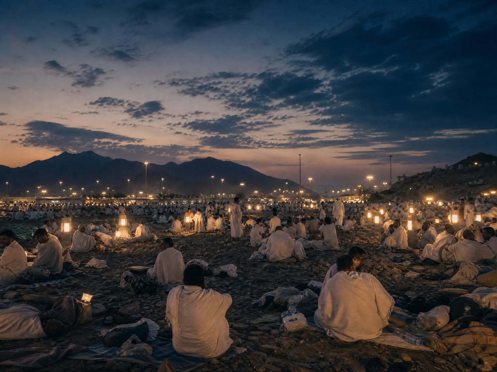

The places that call you.
Ten sites, from the Kaaba to the Prophet's Mosque ﷺ. Scroll slowly.
The rites of Hajj unfold over five days and five places. Each one asks something different of you.

The Kaaba & Tawaf
The heart of the journey, where every circle is a prayer. Hajj begins and ends here.
Makkah
Mina, the city of tents
On 8 Dhul Hijjah pilgrims move to Mina. Our Maktab A tents sit in Zone 1, closest to the Jamarat.
Mina
The plain of Arafat
The 9th of Dhul Hijjah. A day of standing, prayer and forgiveness, and the essence of Hajj itself.
Mount Arafat
Muzdalifah
A night beneath the open sky, gathering pebbles and strength for the days ahead.
Between Arafat and Mina
The Jamarat
Over three days, pilgrims stone the pillars in remembrance of Ibrahim's resolve.
MinaUmrah can be made in any month, and centres on the Haram in Makkah, with a visit to Madinah.

The Holy Kaaba
The sacred centre of Makkah and the direction of every prayer on earth.
Masjid al-Haram
Maqam Ibrahim
The station of Ibrahim, where pilgrims pray two rak'ahs after Tawaf.
Beside the Kaaba
Zamzam
The well that has given water since the time of Hajar and Isma'il.
Masjid al-Haram
Safa & Marwa
The walk of Hajar between two hills, retraced by every pilgrim in Sa'i.
Masjid al-Haram
Masjid an-Nabawi
The Prophet's Mosque ﷺ, and the peace of the city that welcomed him.
MadinahReady to stand here yourself?
Let us plan the journey that brings you to every one of these places.